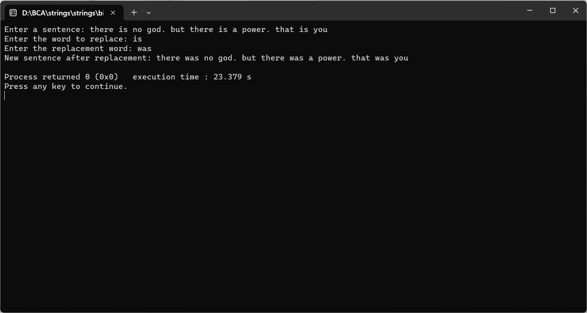

ENTER A SENTENCE FROM USER AND THEN ENTER THE WORD AND REPLACE THAT WORD BY ANOTHER WORD
#include
#include
int main() {
char sentence[1000];
char wordToReplace[100];
char replacementWord[100];
char newSentence[1000];
int sentenceLength, wordToReplaceLength, replacementWordLength;
int i, j, k, found;
printf("Enter a sentence: ");
fgets(sentence, sizeof(sentence), stdin);
printf("Enter the word to replace: ");
scanf("%s", wordToReplace);
printf("Enter the replacement word: ");
scanf("%s", replacementWord);
sentence[strcspn(sentence, "\n")] = '\0'; // Remove the newline character
sentenceLength = strlen(sentence);
wordToReplaceLength = strlen(wordToReplace);
replacementWordLength = strlen(replacementWord);
for (i = 0, j = 0; i <= sentenceLength - wordToReplaceLength; ) {
found = 1;
for (k = 0; k < wordToReplaceLength; k++) {
if (sentence[i + k] != wordToReplace[k]) {
found = 0;
break;
}
}
if (found) {
for (k = 0; k < replacementWordLength; k++, j++) {
newSentence[j] = replacementWord[k];
}
i += wordToReplaceLength;
} else {
newSentence[j++] = sentence[i++];
}
}
while (i < sentenceLength) {
newSentence[j++] = sentence[i++];
}
newSentence[j] = '\0';
printf("New sentence after replacement: %s\n", newSentence);
return 0;
}
